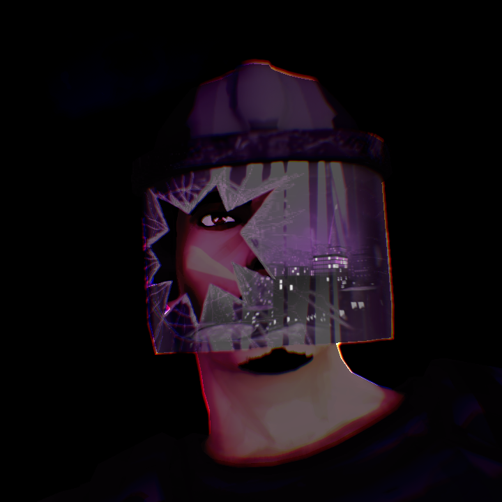
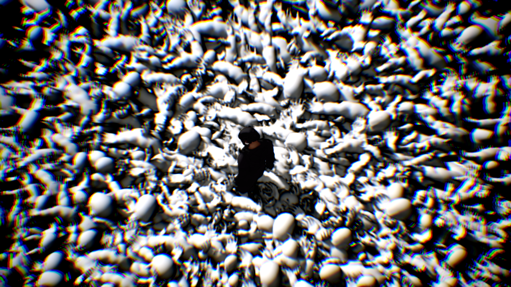
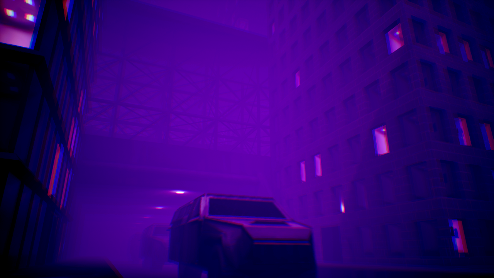
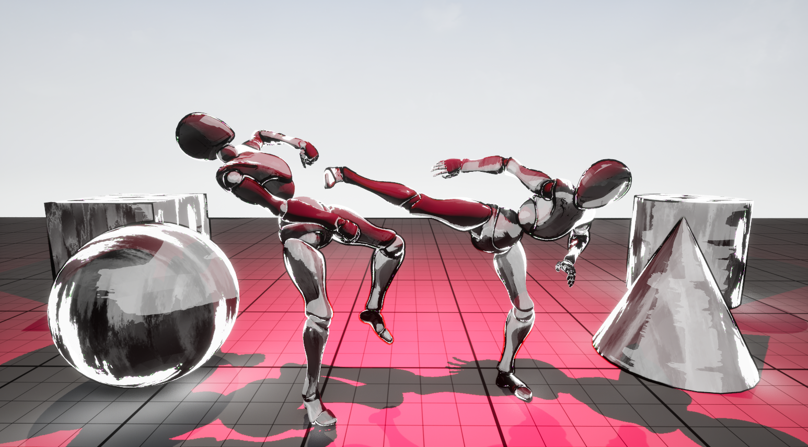
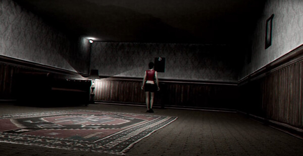
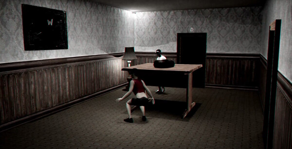
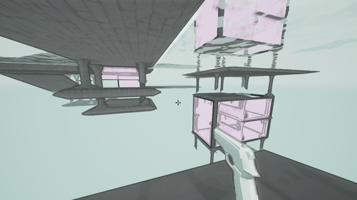
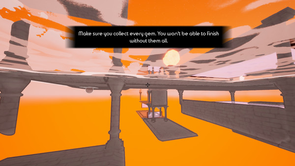
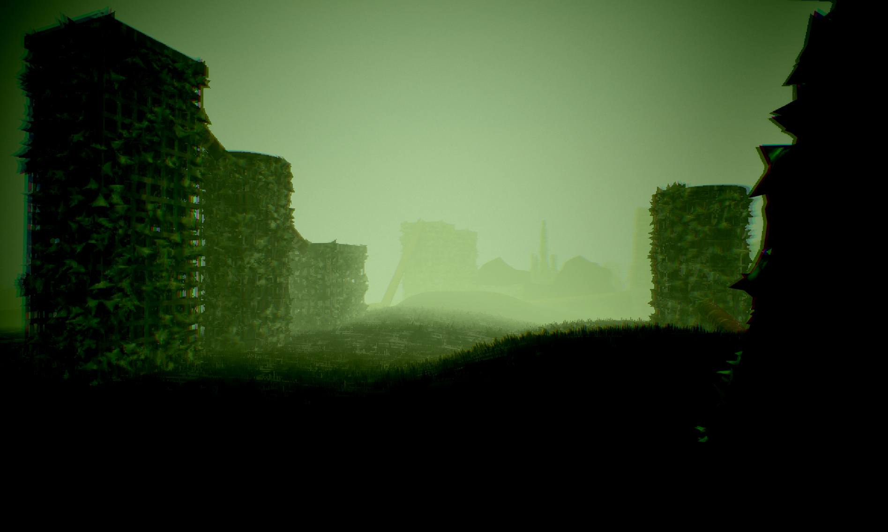

Tech Art
For all of my games and films, I've built custom shaders, materials, and tools in Unreal Engine. Here are some of my favorites.
Blood on a Bird's Foot (새발의피)
Blood on a Bird's Foot is a short film made with Blender and Unreal Engine in collaboration with 8k Productions. I built custom materials and shaders for a unique comic book-like aesthetic.

Blood on a Bird's Foot deals with intense social topics such as nuclear war and police brutality. As lead tech artist, I was faced with the challenge of creating stylized visuals that fit the tone and themes of the film. I settled on a mix of cel shading and a high-contrast monotone color scheme. Using the custom depth pass, I isolated organic components like skin, hair, and eyes, and applied cel shading and a custom LUT. This separated the main character from the background, emphasizing the themes of isolation. The environment visuals were fine-tuned with a combination of chromatic aberration, bloom, and fog. Together these elements provided a comic book-esque visual that set an atmosphere consistent with the serious subject matter.


Ink Painting Shader

For my latest game I've been working on an ink painting shader. It uses a variety of techniques to give the world a painted look. The material of each object uses a local-space aligned repeating paint texture I created in GIMP. For skeletal meshes, the UVs use pre-skinned local-space so the mesh can deform without warping the texture. The material also uses two layers of cel shading, one for shadows and one for highlights, and a fresnel node multiplied with the painted texture gives the "erosion" effect around the edges. Lastly, I made a post-process material consisting of an HLSL outline shader multiplied with a scrolling noise texture to create ink strokes of varying thickness.
Found Footage Horror Post Process


For my cinematic horror game The Inner Demons, I created a found footage post process material. This shader was more of a color grading exercise than a technical shader, but it taught me a lot about the Unreal camera system. A mix of value manipulation through LUTs, film grain, and chromatic aberration gave the perfect blend for a creepy old school found footage movie.
Stylized Mind-Bending Geometry


The Reflection was my first Steam release and explores impossible retroreflective geometry. Creating levels for this game required dynamic mesh slicing to create a convincing reflection that the player can travel through. An HLSL outline shader, stylized water material, and vibrant colors create a surreal environment that complements the mind-bending gameplay.
Foliage and Grass

For Broken Peaces, I worked with our team's 3D artist to build a city retaken by nature. Using Blender geometry nodes, we built foliage in a noise pattern around the surface of the ruined skyscrapers. I also used Unreal's foliage system to render thousands of blades of grass along the landscape.